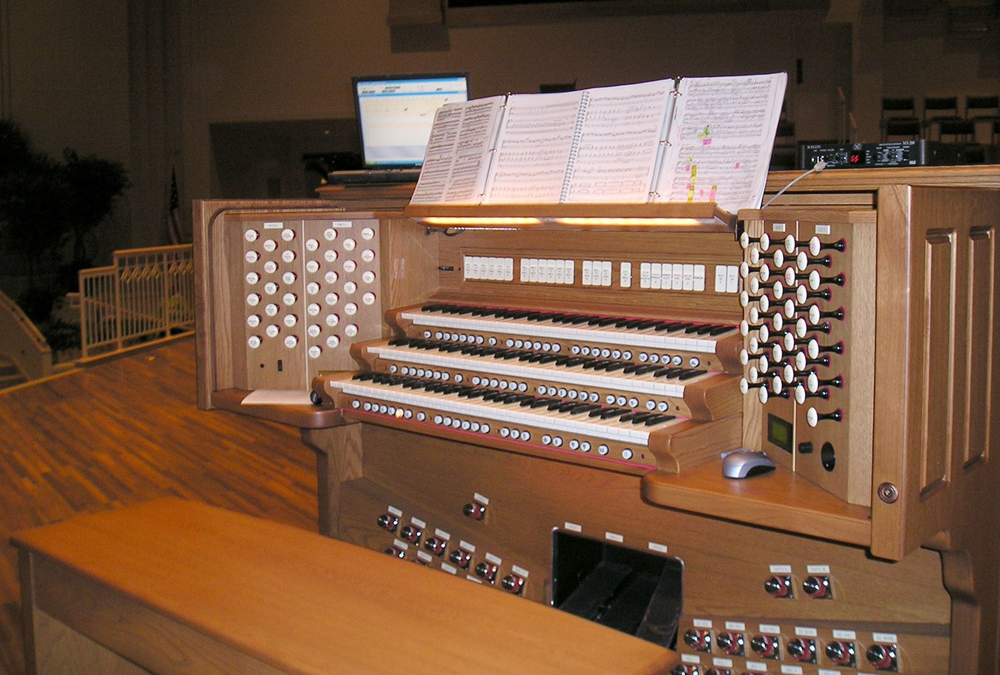

Exploring polyphony, counterpoint, and choir accompaniment. Studying multi-voice Bach fugues and complex score reading.
Focusing on Baroque fugal structure, voice-leading balance, and dynamics.

Controlling pedalboards, registration stops, and multi-manual instrumentation.
Directing rehearsals and accompanying four-part choral ensembles.
Fugues, Preludes & Organ Chorales
Nocturnes, Waltzes & Etudes
Handel Messiah & Sacred Anthems
Liturgical Modulation & Hymnology